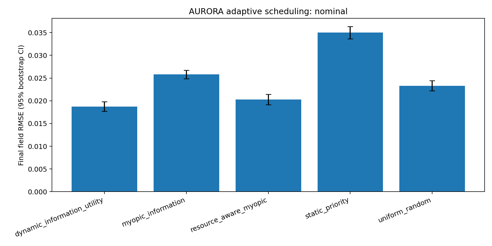
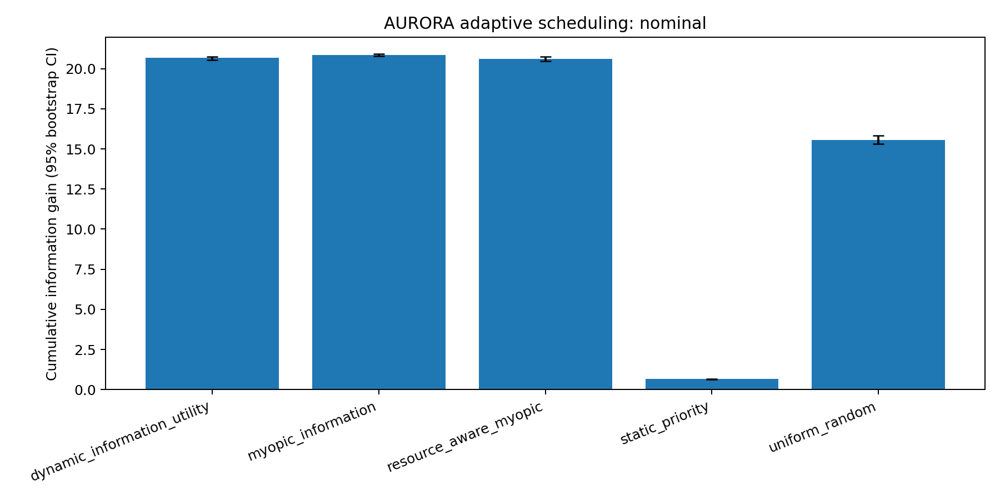
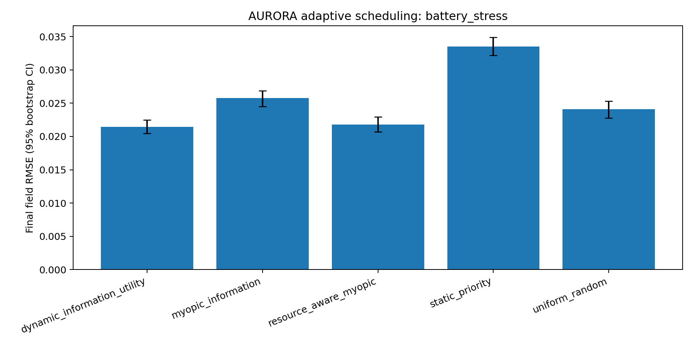
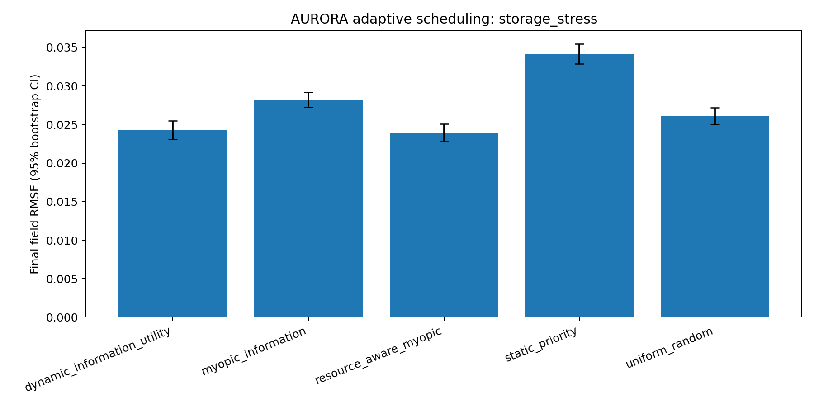
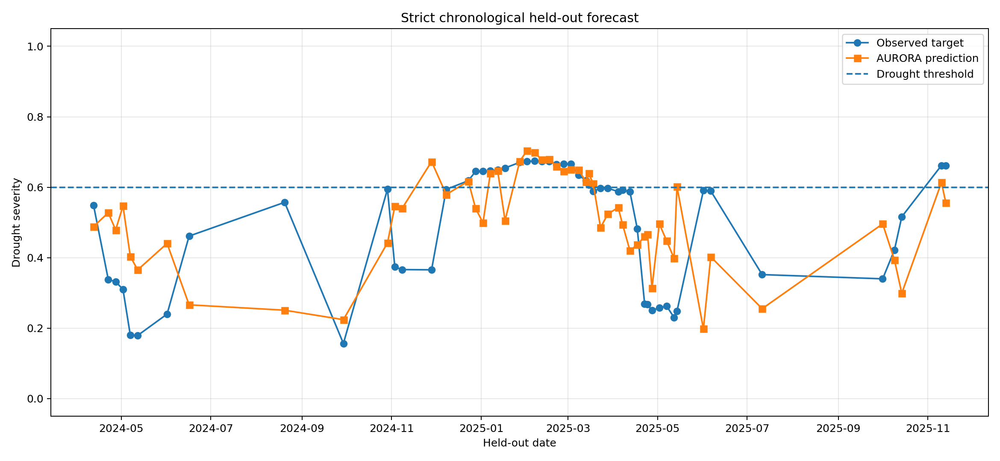
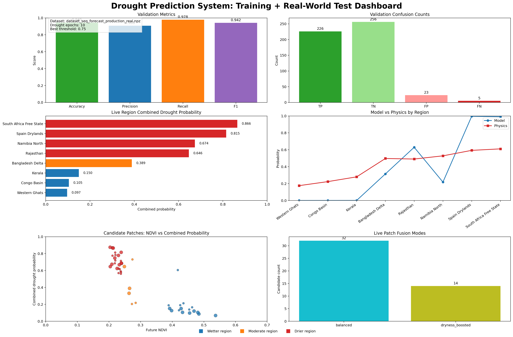

AURORA-SR / Field archive
Evidence from the experiments.
Browse recorded model and mission-planning outputs. Each figure comes from a specific experiment run and carries the limits of that run.

Reconstruction error
RMSE over the nominal resource scenario.
Open figure ↗
Information gained
Information gain across the nominal observation plan.
Open figure ↗
Observation schedule
Selected observations under the nominal resource settings.
Open figure ↗
Battery constraint
Reconstruction error with reduced battery availability.
Open figure ↗
Cloud constraint
Reconstruction error under the cloud-stress scenario.
Open figure ↗
Storage constraint
Reconstruction error with tighter onboard storage.
Open figure ↗
Held-out region forecast
Recorded regional drought forecast output.
Open figure ↗
Observed and predicted
Recorded comparison for the drought prediction experiment.
Open figure ↗
Experiment overview
Snapshot of the research results dashboard.
Open figure ↗